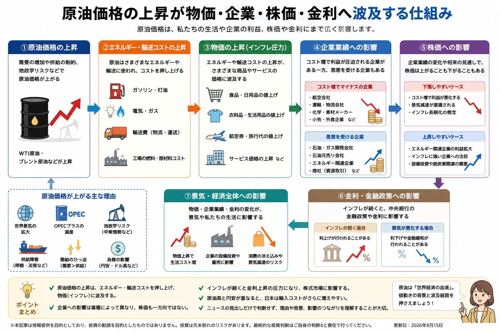

Overview
原油高が生活と市場へ波及する流れ

- 原油はガソリンだけでなく、物流・電力・化学製品など幅広い分野と関係します。
- 原油価格の上昇は企業のコスト増を通じて商品価格へ波及する場合があります。
- 株価への影響は全銘柄で同じではなく、業種や企業の収益構造によって異なります。
- 日本では円相場も輸入コストを考える重要な材料です。
Definition
原油価格とは？
原油価格とは、石油製品の原料となる原油が市場で取引される価格です。代表的な指標として米国のWTIや北海ブレントなどがあり、それぞれ産地や取引市場が異なります。
WTI
米国市場で注目される代表的な原油指標
米国の原油市場を見る際によく使われる価格指標です。ニュースでは「WTI原油先物」などの名称で登場します。
ブレント
世界の原油価格を見る代表的な指標
北海産原油を基準とする指標で、欧州を含む国際的な原油価格の目安として広く使われます。
原油価格は一つの固定価格ではありません。ニュースを見るときは、どの指標の価格なのか、上昇・下落の背景は何かを確認すると理解しやすくなります。
Supply & Demand
なぜ原油価格は上がるの？
原油価格は基本的に世界の需要と供給への見方で動きます。ただし、実際には複数の材料が同時に影響します。
世界景気と需要
景気が強く、工場・物流・航空などの活動が増えると、エネルギー需要の増加が意識されやすくなります。
産油国の生産方針
主要産油国が減産すれば供給が減るとの見方から価格上昇要因になる場合があります。増産は反対方向の材料になり得ます。
OPECプラス
主要産油国による生産方針は世界の供給見通しへ影響するため、市場で注目されます。
地政学リスク
産油地域や輸送ルートで緊張が高まると、供給が滞る可能性が意識され、価格が動くことがあります。
供給障害・在庫
設備トラブル、自然災害、在庫の増減なども短期的な需給へ影響します。
金融市場・為替
原油は国際商品として取引されるため、ドルや金利、投資家心理の変化も価格形成に影響します。
Prices
原油高で物価はどうなる？
原油高はガソリン価格だけで終わるとは限りません。物流や製造のコストを通じて、時間差でさまざまな商品・サービスへ影響する場合があります。
- 原油価格が上昇する
ガソリン、軽油、重油、石油化学製品などの原料コストが上がりやすくなります。
- エネルギー・輸送コストが増える
トラック、船舶、航空などの燃料費や、工場のエネルギー費用が増える場合があります。
- 企業が価格へ転嫁する
企業がコスト増を吸収しきれない場合、商品やサービスの価格へ一部を転嫁することがあります。
- 物価指標にも影響する
エネルギー価格の変化はCPIなどの物価指標へ影響し、金融政策の判断材料になる場合があります。
| 分野 | 主な波及経路 | 初心者向けポイント |
|---|---|---|
| ガソリン | 原油から石油製品を精製 | 原油価格と為替の双方が影響 |
| 電気・ガス | 燃料価格や発電コスト | 燃料構成や制度によって影響は異なる |
| 物流 | トラック・船舶・航空の燃料費 | 幅広い商品の輸送費へ波及する場合がある |
| 食品・日用品 | 輸送費・包装材・製造コスト | 原油と直接関係なさそうな商品にも波及することがある |
| 化学製品 | 石油由来の原材料 | 原材料価格が企業利益に影響する場合がある |
※ スマートフォンでは横にスクロールできます。
Stocks
原油高で株価はどうなる？
原油高の株価への影響は一方向ではありません。原油販売価格の上昇が利益につながりやすい企業もあれば、燃料や原材料コストの増加が負担になる企業もあります。
| 業種・分野 | 影響の方向 | 主な理由 |
|---|---|---|
| 石油・資源開発 | 追い風になる場合 | 販売価格上昇が収益改善につながる可能性 |
| 商社・資源関連 | 追い風になる場合 | 資源権益や関連事業の収益が注目される |
| 航空 | 負担になる場合 | 燃料費の上昇がコスト増につながりやすい |
| 運輸・物流 | 負担になる場合 | 燃料コストの影響を受けやすい |
| 化学・素材 | 企業ごとに異なる | 原材料高と販売価格への転嫁力のバランスが重要 |
| 小売・外食 | 負担になる場合 | 物流・光熱費・原材料費が増える可能性 |
※ 同じ業種でも事業構成や価格転嫁力、為替ヘッジなどによって影響は異なります。
原油高＝株安とは限りません。 原油高の原因が強い世界景気なら企業売上を支える面もあります。反対に供給不安だけで急騰すれば、コスト増とインフレ懸念が株式市場の重しになる場合があります。
Inflation & Rates
原油高とインフレ・金利の関係
原油高が長引くと、エネルギーや物流のコストを通じて物価上昇圧力になる場合があります。そのため、原油価格は中央銀行の金融政策を考える材料の一つにもなります。
原油価格
エネルギー・輸送コストへ影響
物価・CPI
物価上昇率の変化として確認される
金融政策・金利
インフレ見通しを通じて政策判断へ影響する場合がある
ただし、中央銀行は原油価格だけで政策を決めるわけではありません。賃金、景気、雇用、基調的な物価動向など、多くの情報を組み合わせて判断します。
Yen & Imports
円安と原油高が重なるとどうなる？
日本は原油の多くを海外から輸入しています。原油取引はドル建てが中心のため、原油価格だけでなく円とドルの為替レートも円換算の輸入コストに関係します。
原油高
ドル建ての原油価格そのものが上昇し、輸入価格を押し上げる要因になります。
円安
同じドル価格の原油を買う場合でも、より多くの円が必要になるため円換算コストが増えやすくなります。
原油高＋円安
二つが同時に進むと、企業や家計のエネルギー負担がより強く意識される場合があります。
実際の販売価格には在庫、税金、補助制度、企業の調達契約なども関係するため、原油価格や為替が動いた分だけすぐ同じ幅で店頭価格へ反映されるわけではありません。
When Oil Falls
原油価格が下がるとどうなる？
原油安は燃料や原材料コストを抑える方向に働き、家計や企業にはプラスになる場合があります。ただし「原油安＝必ず株高」とも限りません。
コスト低下型の原油安
企業・家計には追い風になる場合
供給増などで原油価格が下がれば、燃料・物流・原材料費が落ち着き、企業利益や家計負担にプラスとなる場合があります。
景気悪化型の原油安
需要減少が原因なら注意
世界景気の悪化で需要が減り原油価格が下落している場合は、企業業績への不安から株式市場も弱くなることがあります。
News Checklist
初心者が原油ニュースを見るポイント
「原油が○％上昇」という見出しだけで投資判断をせず、なぜ動いたのかと、どの業種へ影響するのかを分けて見ることが大切です。
- WTI・ブレントのどちらの価格か
- 需要増なのか、供給減なのか
- OPECプラスなど産油国の生産方針
- 中東などの地政学リスクと供給ルート
- 円安・円高が同時に進んでいるか
- CPIなど物価指標へどう波及しているか
- エネルギー株だけでなく航空・運輸・化学・小売なども見る
原油価格は「相場の答え」ではなく、経済を見る材料の一つです。 景気、金利、為替、企業業績などと組み合わせて確認しましょう。
Related Articles
関連する話題・基礎知識
原油高の影響を理解するには、物価・金利・為替・業種のつながりを一緒に確認すると分かりやすくなります。
FAQ
原油価格に関するよくある質問
原油価格とは何ですか？
原油を取引する際の価格です。代表的な指標にはWTIや北海ブレントなどがあり、世界の需要と供給、産油国の政策、景気、地政学リスクなどで変動します。原油価格が上がると物価も上がりますか？
原油高はガソリン、電力、輸送、製造などのコスト上昇につながり、商品やサービスの価格へ波及する場合があります。ただし影響の大きさや反映までの時間は一様ではありません。原油高になると株価は下がりますか？
必ず下がるわけではありません。コスト増が負担になる企業がある一方、資源・エネルギー関連など原油高が追い風になる業種もあります。市場全体は景気、金利、為替など他の要因にも左右されます。原油高で上がりやすい業種はありますか？
石油・資源開発など、販売価格上昇が収益改善につながる企業は追い風を受ける場合があります。ただし企業ごとの事業構造、コスト、ヘッジ状況などによって反応は異なります。円安と原油高が同時に起きるとどうなりますか？
日本は原油の多くを輸入しており、原油取引はドル建てが中心です。原油高と円安が重なると円換算の輸入コストが増え、家計や企業の負担が大きくなる場合があります。原油価格はなぜ毎日変わるのですか？
世界景気、産油国の生産方針、在庫、供給障害、地政学リスク、金融市場の動きなどが日々変化し、将来の需要と供給への予想も価格に反映されるためです。
Summary
まとめ｜原油価格は物価・企業・株価をつなぐ重要な材料
- 原油価格は世界の需要と供給、産油国の政策、景気、地政学リスクなどで変動します。
- 原油高はエネルギー・輸送・製造コストを通じて物価へ波及する場合があります。
- 株価への影響は業種ごとに異なり、原油高が追い風になる企業もあります。
- 原油高がインフレを強めれば、金融政策や金利への見方が変化する場合があります。
- 日本では円安と原油高が重なると、円換算の輸入コストが増えやすくなります。
- 「原油高＝株安」「原油安＝株高」と単純化せず、動いた理由と波及先を確認することが大切です。
Next Step
原油ニュースはCPI・金利・円安とセットで見る
原油価格が動いたときは、物価指標や金利、為替も確認すると経済ニュースのつながりが見えやすくなります。
ご利用にあたっての注意事項
本記事は一般的な情報提供と金融教育を目的としており、特定の企業・銘柄・ETF・商品先物・証券会社の推奨や投資の勧誘を目的としたものではありません。株式やその他の金融商品は元本保証がなく、相場変動、為替変動、信用状況、制度変更などにより損失が生じる場合があります。取引を行う際は最新の公式情報や契約締結前交付書面などを確認し、ご自身の判断と責任で行ってください。